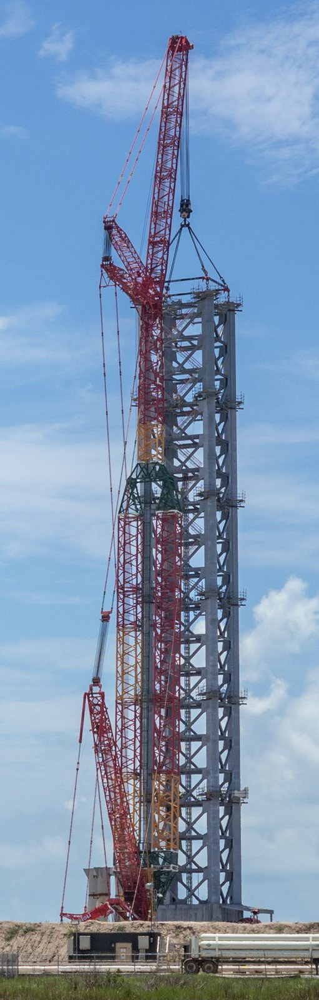
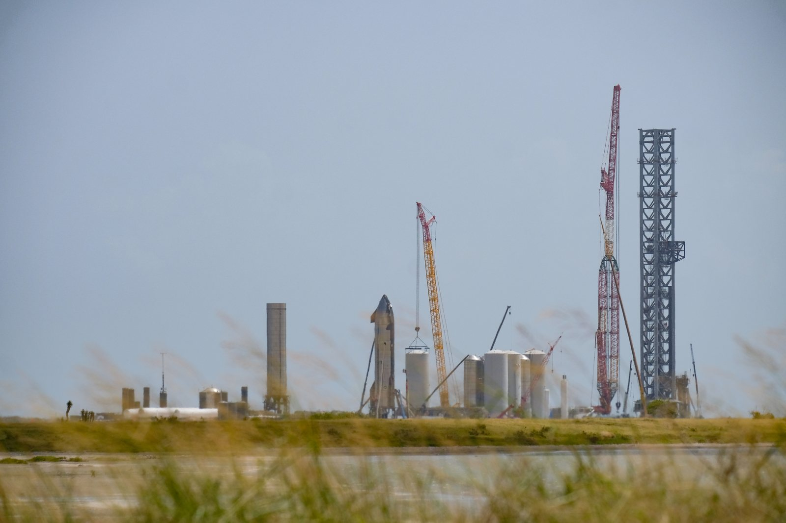
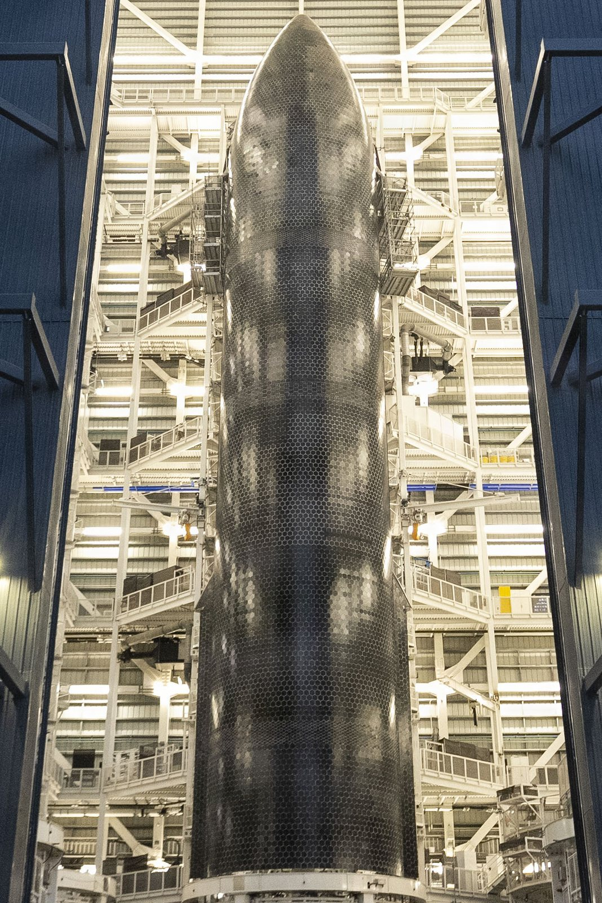

Il 13 ottobre 2026 la Federal Aviation Administration deposita un avviso di intent destinato al Federal Register del 14 ottobre: intende preparare una programmatic environmental impact statement (PEIS) sulle operazioni Starship-Super Heavy al Boca Chica Launch Site di Starbase, in Texas, e sull'espansione delle aree di atterraggio e di expenditure. Il docket è FAA-2026-12808, il documento di public inspection è il 2026-20963. I numeri che fanno notizia sono chiari: l'analisi considera fino a 456 lanci e fino a 912 atterraggi all'anno. Quello che l'avviso non fa è altrettanto importante: non autorizza quella cadenza. Apre solo lo scoping ambientale.
Che cosa ha depositato la FAA
La FAA comunica l'intento di preparare una PEIS, cioè una valutazione ambientale di programma, non un'autorizzazione di volo. Il testo in public inspection riguarda le operazioni di lancio e atterraggio Starship-Super Heavy a Starbase e l'espansione delle aree di atterraggio e di expenditure. La pubblicazione ufficiale sul Federal Register è prevista per il 14 ottobre 2026.
Secondo l'avviso, SpaceX è oggi autorizzata a Boca Chica fino a 25 lanci orbitali e 50 atterraggi all'anno (25 per Starship e 25 per Super Heavy), nel quadro della tiered environmental assessment e del mitigated finding of no significant impact del 2025. La nuova PEIS non sostituisce di colpo quel tetto: valuta uno scenario molto più ampio, diviso in due fasi, e solo dopo quel lavoro l'agenzia potrà decidere se e come aggiornare i limiti di licenza.
Il 456 e il 912 sono soffitti di analisi distinti. I 456 contano i lanci che partono dal sito. I 912 contano gli atterraggi a Boca Chica, anche quelli legati a missioni partite altrove. Un veicolo può quindi arrivare a Starbase dopo un decollo da un altro complesso, e quel rientro entra nel conteggio degli atterraggi texani.

Due fasi: da 100 a 456 lanci
La Fase 1 dell'analisi considera fino a 100 lanci e 200 atterraggi all'anno, in qualsiasi giorno e a qualsiasi ora. È già un salto netto rispetto ai 25 lanci attuali: in pratica un volo ogni tre o quattro giorni se il tetto venisse riempito.
La Fase 2, descritta come fase di programma maturo da attuare «entro diversi anni», alza il soffitto a 456 lanci e 912 atterraggi. In quella fase i lanci restano possibili a qualsiasi ora, ma solo dal lunedì al venerdì. Su un anno lavorativo tipico, 456 lanci equivalgono a circa 1,7 decollo al giorno nei giorni feriali: una cadenza da fabbrica, non da campagna di test.
Per i modelli ambientali la FAA assume, a fini di calcolo, che metà delle operazioni avvenga tra le 7:00 e le 22:00 e metà tra le 22:00 e le 7:00. Sono ipotesi di modellazione, non orari di volo già approvati. L'agenzia elenca le aree di impatto da esaminare: qualità dell'aria, risorse biologiche e costiere, rumore, effetti socioeconomici, rischi per la salute dei minori, effetti visivi, risorse idriche, beni storici e culturali, uso del suolo, materiali pericolosi, emissioni aeronautiche e altri temi previsti dalla NEPA, oltre alle consultazioni previste dall'Endangered Species Act e dalle norme sulla conservazione storica.
| Fase | Lanci / anno | Atterraggi / anno | Finestra operativa analizzata |
|---|---|---|---|
| Autorizzazione attuale (dichiarata dalla FAA) | fino a 25 | fino a 50 | tetto vigente post-EA 2025 |
| Fase 1 (analisi) | fino a 100 | fino a 200 | qualsiasi giorno e ora |
| Fase 2 (analisi) | fino a 456 | fino a 912 | qualsiasi ora, solo feriali |

Atterraggi a terra, in Golfo e in oceano
Il tetto di 912 atterraggi riguarda il sito texano, indipendentemente da dove un dato volo sia partito. SpaceX può riportare Ship e Super Heavy in posizione verticale sulla torre di cattura, oppure indirizzare gli stadi verso splashdown nel Golfo o in oceano aperto. Quella flessibilità entra nell'analisi perché cambia rumore, traiettorie, chiusure di spazio aereo e aree di expenditure marine.
L'avviso ricorda anche che qualsiasi aumento futuro di cadenza oltre lo scenario descritto nella proposta richiederebbe una valutazione ambientale separata. In altre parole: 456 non è un tetto «aperto» da alzare con un'appendice; è il massimo che questa PEIS è chiamata a esaminare.
Il contesto operativo resta quello di un sito ancora in fase di ricerca e sviluppo a ritmo di test. Nel 2026 SpaceX ha già effettuato tre lanci Starship da Starbase, incluso il Flight 14 di fine settembre, che ha raggiunto l'orbita e ha dispiegato satelliti Starlink V3. Il conteggio annuo storico da Boca Chica non ha mai superato le cinque missioni in un singolo anno solare. Tra i 5 voli reali e i 456 della Fase 2 c'è quindi un salto di due ordini di grandezza: l'avviso FAA mette in fila la carta, non la macchina già pronta a quel ritmo.

Scoping pubblico: date e canali
La FAA invita commenti su alternative, impatti potenziali e studi rilevanti fino al 30 novembre 2026. I contributi vanno presentati tramite il portale federale regulations.gov sul docket FAA-2026-12808, oppure per posta allo specialista indicato nell'avviso. I commenti depositati nel docket diventano pubblici, inclusi i dati personali eventualmente allegati.
Sono previsti incontri di scoping in presenza e uno virtuale. Il 17 novembre sessioni a Texas Southmost College a Brownsville; il 19 novembre al Port Isabel Event & Cultural Center. In entrambe le date gli orari indicati sono 13:00–15:00 e 17:30–19:30 ora centrale. Il 18 novembre è in programma una sessione virtuale dalle 17:30 alle 19:30 ora centrale. Materiali e aggiornamenti saranno pubblicati sulla pagina FAA del progetto Starship a Boca Chica.
Dopo lo scoping arriverà una bozza di PEIS per un nuovo giro di osservazioni pubbliche. Solo a valle di quel percorso, e di eventuali consultazioni parallele, l'agenzia potrà modificare i limiti operativi. Nessuna data di pubblicazione della bozza è fissata nell'avviso del 13 ottobre.
| Data | Evento | Dettaglio |
|---|---|---|
| 13 ottobre 2026 | Deposito avviso | Public inspection documento 2026-20963 |
| 14 ottobre 2026 | Federal Register | Pubblicazione ufficiale prevista dell'avviso di intent |
| 17 novembre | Meeting Brownsville | Texas Southmost College, due sessioni |
| 18 novembre | Meeting virtuale | 17:30–19:30 CT |
| 19 novembre | Meeting Port Isabel | Event & Cultural Center, due sessioni |
| 30 novembre 2026 | Scadenza commenti | Docket FAA-2026-12808 su regulations.gov |
Perché conta per Starship (e cosa non decide ancora)
Starbase è da anni il centro di ricerca, sviluppo e volo sperimentale di Starship. Accanto a questo sito SpaceX ha già parlato di un impianto in Louisiana pensato per alte cadenze. L'avviso texano è la carta federale che deve passare se Boca Chica stessa vuole salire da poche decine di voli autorizzati verso un ritmo da settimana lavorativa continua.
Elon Musk ha ripetuto in più occasioni l'obiettivo di riuso rapido misurato in ore, fino a più di un volo all'ora in uno scenario di lungo periodo. Quella visione industriale e i numeri della PEIS non sono la stessa cosa: la FAA analizza un massimo di 456 lanci annui feriali a Boca Chica, non un'autorizzazione a volare ogni sessanta minuti. Tra ambizione pubblica e soffitto di licenza resta un percorso regolatorio lungo, con bozza di PEIS, commenti, possibili mitigazioni e poi eventuali modifiche di licenza.
Restano fuori da questa pagina tre cose. La prima è la data della bozza PEIS: l'avviso non la fissa. La seconda è se il soffitto di Fase 2 sopravviverà intatto alla revisione. La terza è quanto in fretta SpaceX riuscirebbe a volare a quei ritmi anche con una licenza aggiornata: produzione di veicoli, torre, propellenti, chiusure di spazio aereo e accettabilità locale pesano quanto il pezzo di carta.
Che cosa aspettarsi adesso
I segnali concreti da seguire sono quattro. Il primo è il docket FAA-2026-12808: commenti, studi allegati dalle parti e dalle comunità. Il secondo sono i meeting di novembre a Brownsville, Port Isabel e in sessione virtuale. Il terzo è la pubblicazione della bozza di PEIS, quando arriverà. Il quarto, parallelo, è l'attività reale a Starbase: test criogenici, spostamenti di booster e Ship, calendario dei voli di prova. Finché la PEIS non è chiusa e la licenza non è modificata, il tetto resta quello attuale: 25 lanci e 50 atterraggi all'anno.
Il dossier su Ship 40 di nuovo verticale nella Megabay 2 passa all'archivio Notizie. In primo piano resta la mossa regolatoria: la FAA ha messo sul tavolo, per analisi e dibattito pubblico, la possibilità di portare Starbase da una base di test a un sito da centinaia di operazioni Starship all'anno.
Fonti pubbliche e tracce
Ultimo aggiornamento editoriale: 14 ottobre 2026. Nel corpo non si ripete la fonte a ogni frase: le tracce sono raccolte qui. L'avviso FAA avvia lo scoping e non autorizza i 456 lanci.
- Federal Register Public Inspection, documento 2026-20963: avviso FAA di intent per PEIS su operazioni Starship-Super Heavy a Boca Chica / Starbase; pubblicazione prevista 14 ottobre 2026.
- Docket FAA-2026-12808 su regulations.gov: canale ufficiale per i commenti di scoping fino al 30 novembre 2026.
- Pagina FAA SpaceX Starship Super Heavy Project at the Boca Chica Launch Site: materiali di stakeholder engagement sul progetto.
- Quartz / Cris Tolomia, 13 ottobre 2026: sintesi dei soffitti 25 / 100 / 456, fasi, commenti e meeting.
- NeoTeo, 13 ottobre 2026: tabella delle fasi, orari dei meeting, distinzione lanci/atterraggi.
- TeslaNorth, 13 ottobre 2026: contesto EA 2025, docket, chiarimento che l'avviso non approva la cadenza.
- Insurance Journal / Loren Grush (Bloomberg), 13 ottobre 2026: resoconto sui 456 lanci, 912 atterraggi e fasi.
- NASASpaceflight su X, 13 ottobre 2026: amplificazione della notizia breaking sui 456 lanci (via dpoddolphinpro).
Fotografie utilizzabili
- Copertina e figure: Wikimedia Commons, licenze CC BY / CC BY-SA / pubblico dominio USA; dettagli in
assets_faa_starbase_456/crediti_immagini.md. - Nessuna foto SpaceX o X a credito editoriale in questo dossier: le immagini libere dell'impianto e dello stack a Starbase bastano a documentare il soggetto della notizia (il sito e il veicolo oggetto della PEIS).